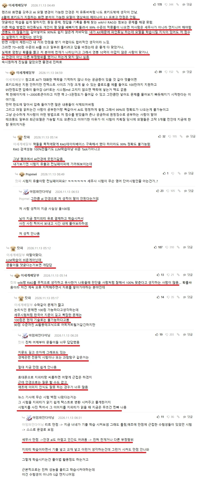
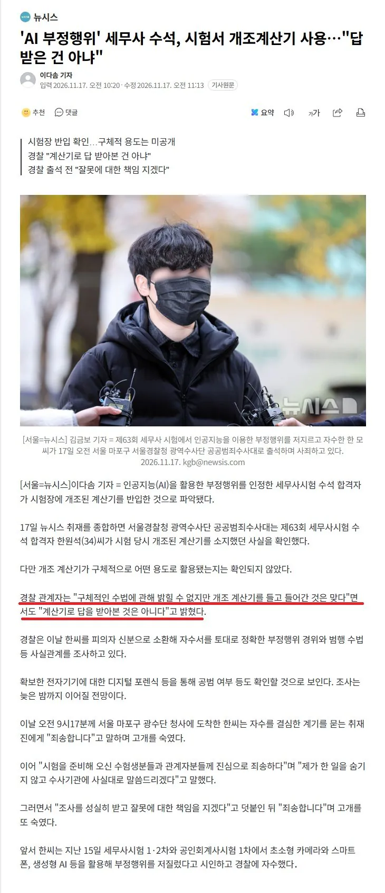
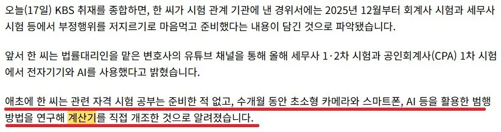

응 되는데요?
직접 계산기 개조해서 해봤더니 되는데요?
남 도움 안받고 그냥 혼자 알아서 다 했는데요?
그리고 계산기로 답을 받아본게 아니라고 했으니
계산기에 ai 박아서
소형카메라로 시험지 찍고 그걸 계산기로 보내
직접 문제풀이하고 계산기 액정에 띄운듯
https://youtube.com/shorts/WrQ4wMeOh-E?si=sgtoe6HVeb_lE70I
계산기에 ai 다 심을수 있는 세상인데..
계산기도 이제 시험장에서 나눠줘야 하나. ㅋㅋㅋㅋㅋ